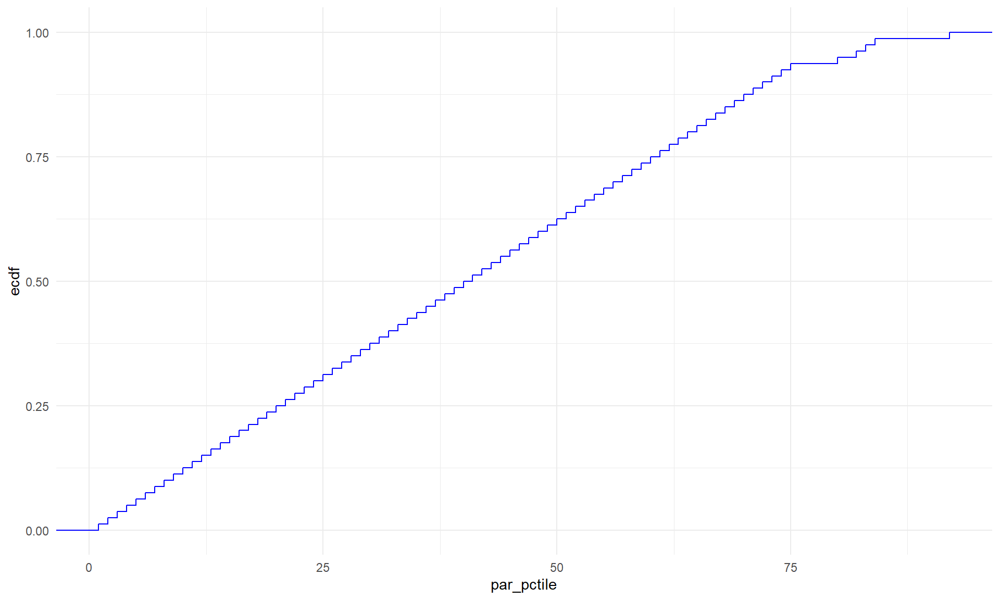
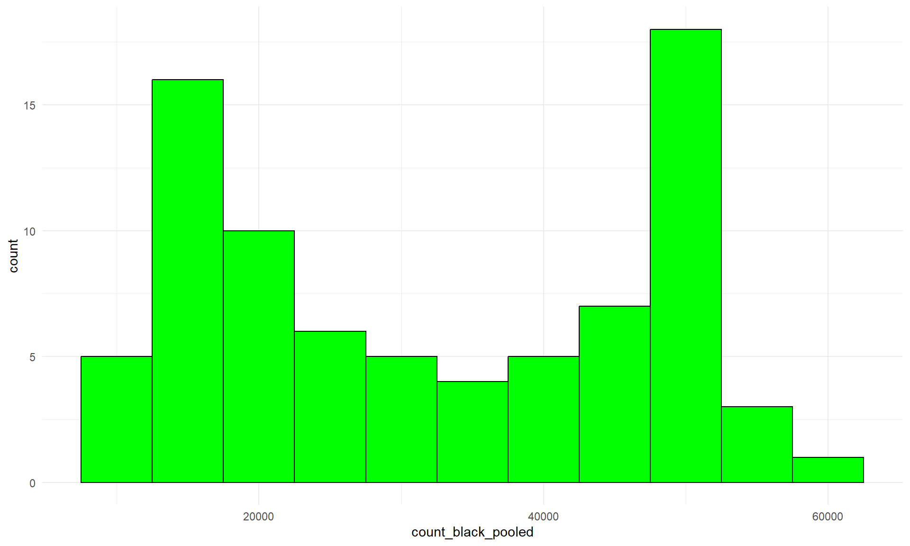
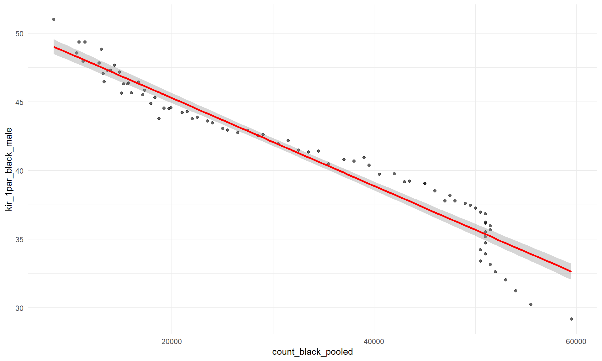

Finding 1: Higher Black population count → lower mobility.
Finding 2: Parent income strongly predicts adult rank.
Finding 3: KNN predicts outcomes effectively.


1 American University
par_pctile, count_black_pooled, kir_1par_black_male, kir_1par_white_male\[ IncomeRank = f(ParentIncome, BlackPopulation) \]
The CDF plot of parent income percentile shows a near-perfect linear increase, indicating a uniform distribution across socio-economic statuses.

Figure 1: CDF of Parent Income Percentile
The histogram is skewed towards lower Black population counts, with peaks at lower counts, suggesting racial segregation patterns.

Figure 2: Histogram of Black Population Count
Higher Black population counts correlate negatively with income ranks for Black males from single-parent households, highlighting systemic disparities.

Figure 3: Black Count vs. Economic Outcome (Black Males, 1 Parent)
Parental income percentile is positively correlated with economic outcomes, whereas Black population size is negatively correlated.
| par_pctile | count_black_pooled | kir_1par_black_male | kir_1par_white_male | |
|---|---|---|---|---|
| par_pctile | 1.0000000 | -0.9812083 | 0.9838699 | 0.9884774 |
| count_black_pooled | -0.9812083 | 1.0000000 | -0.9679799 | -0.9729086 |
| kir_1par_black_male | 0.9838699 | -0.9679799 | 1.0000000 | 0.9961677 |
| kir_1par_white_male | 0.9884774 | -0.9729086 | 0.9961677 | 1.0000000 |
The KNN model (k=5) achieves an RMSE of 1.078 and an R-squared of 0.962, suggesting strong predictive capacity based on only two predictors.
| Metric | Value |
|---|---|
| RMSE | 1.078 |
| R-squared | 0.962 |
Finding 1: Higher Black population count → lower mobility.
Finding 2: Parent income strongly predicts adult rank.
Finding 3: KNN predicts outcomes effectively.